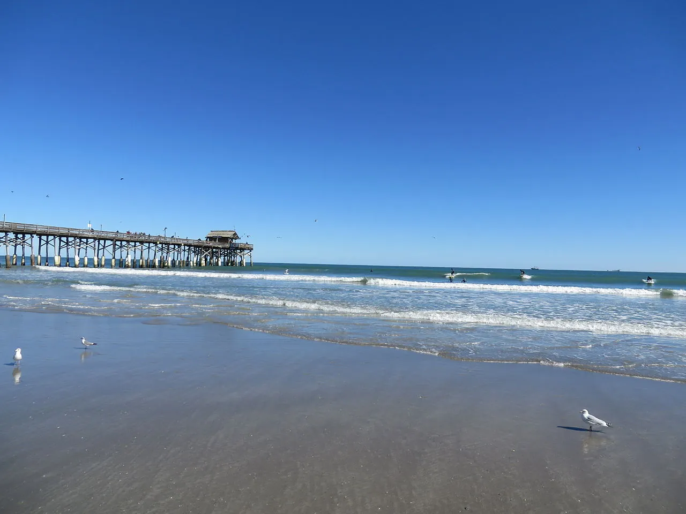

Cocoa Beach
Floride, États-Unis · surf, baignade

Ville natale de Kelly Slater, avec un ponton et des vagues accessibles. Le cœur du surf de la Space Coast.
- Lieu
- Floride, États-Unis
- Niveau
- Débutant
- Activités
- surf, baignade
- Type d'eau
- Mer / océan
- Coordonnées
- 28.32, -80.61 (position approximative du secteur)
Dangers à connaître
- Orages et éclairs fréquents l’été.
- Requins côtiers : évite l’aube près des estuaires.
Le conseil d'Ocean Buddy
Surfe à côté du ponton, jamais dessous.
Ouvrir dans Ocean Buddy Télécharger sur l'App Store
Source : Fiche Ocean Buddy · septembre 2026 · à vérifier localement.